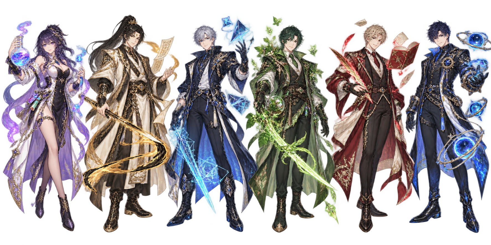

高2023级2班 · 原创动作游戏合集
下课铃响，
战斗开场。
当六门学科化为六种异能。
选择你的老师，在星轨之间打出自己的连招。

THE FACULTY / 006知识，是另一种战斗力。SCROLL TO EXPLORE ↓
01 / COMBAT TERMINAL
三种玩法 · 纪录自动保存在本机选择你的课间战场
02 / THE FACULTY
原创二次元设定 · AI生成角色美术当六门学科化为六种异能。
选择你的老师，在星轨之间打出自己的连招。

THE FACULTY / 006A / D 移动 · 空格双段跳 · J 普攻 · K 闪避 · E 技能 · Q 终结技 · P 暂停